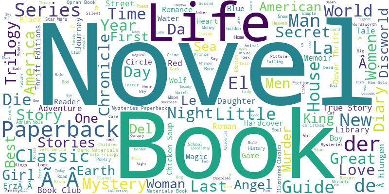
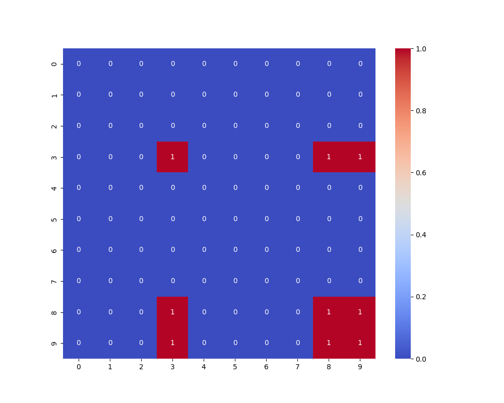

Recommandations sémantiques basées sur TF-IDF et similarité cosinus.


| Critère | TF-IDF + Cosine | GPT Enrichi |
|---|---|---|
| Qualité | Moyenne (Lexicale) | Excellente (Sémantique) |
| Diversité | Faible | Élevée |
| Vitesse | Instantannée | Lente (Appel API) |
Comment recommander sans historique ? Popularité globale et métadonnées utilisateurs.
Mesure l'angle entre vecteurs TF-IDF pour capturer l'orientation thématique indépendamment de la taille du texte.
GPT permet de relier des livres par concepts abstraits là où le TF-IDF se limite au lexique.
Attention aux bulles de filtres qui limitent la découverte de nouveaux horizons littéraires.